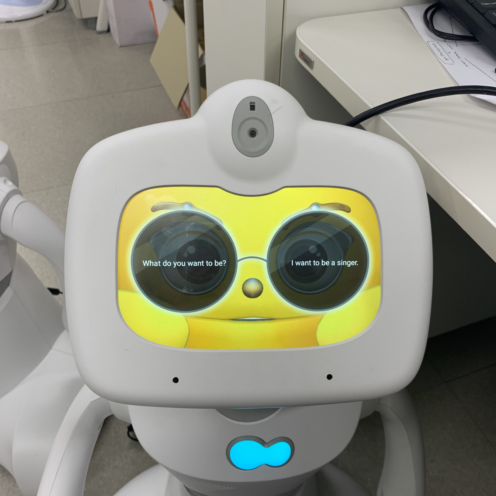
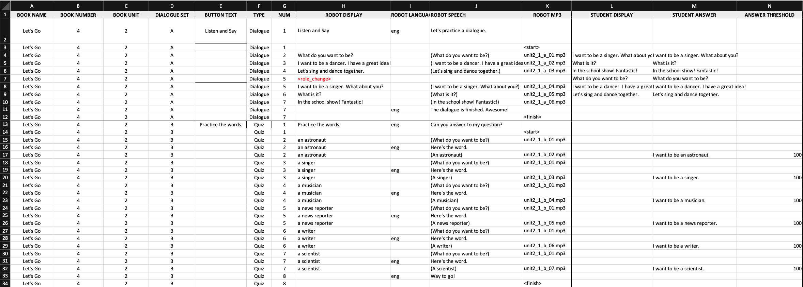
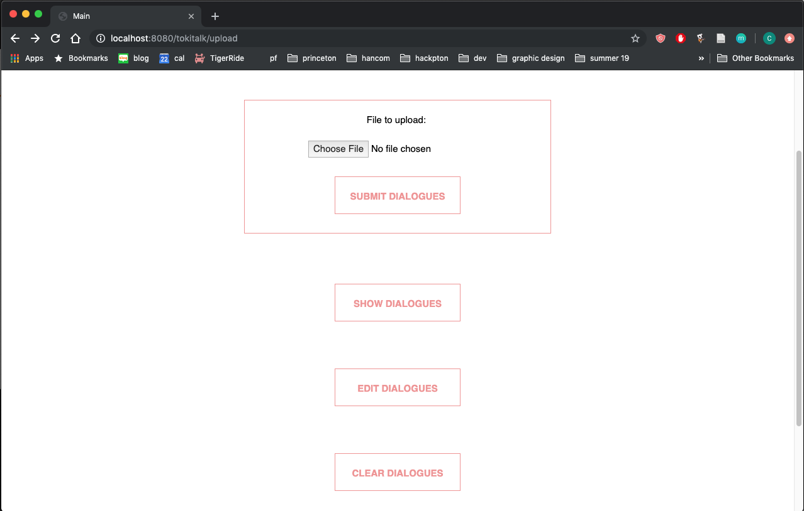
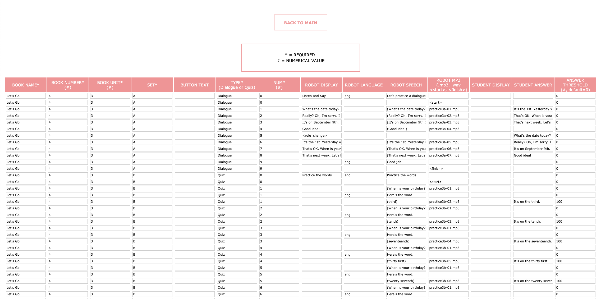
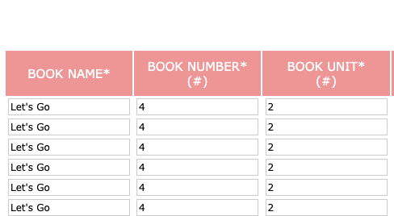
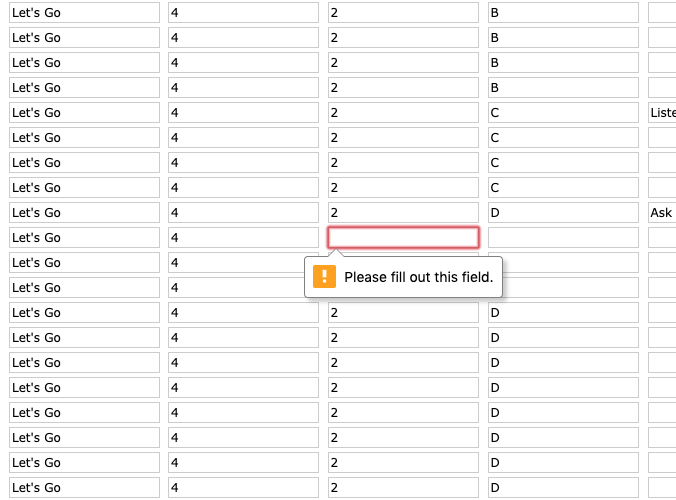
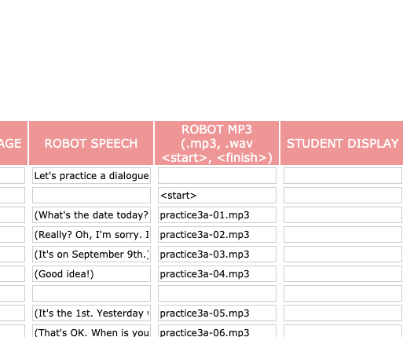
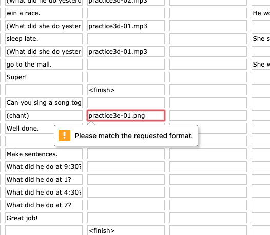
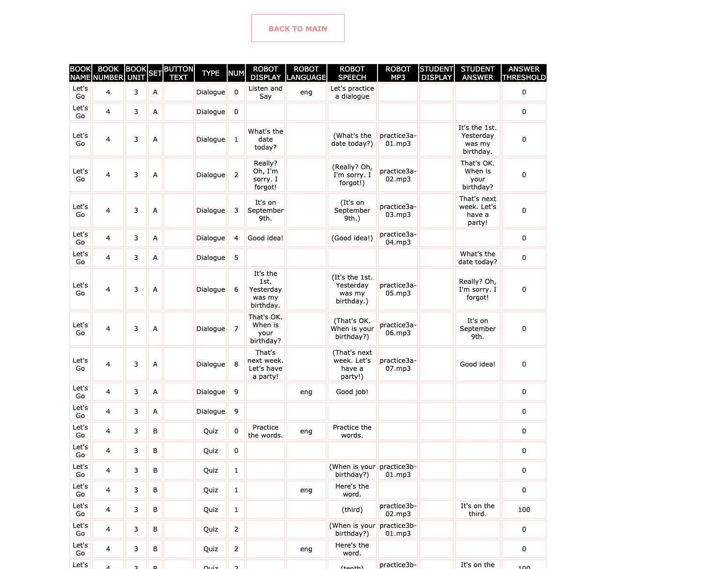
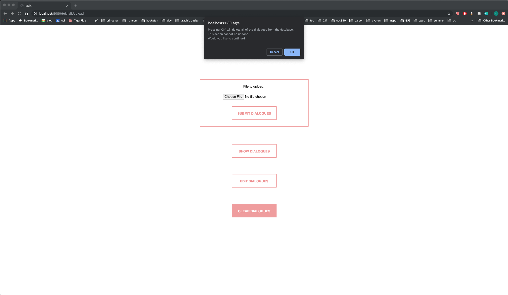

tokitalk
In the summer after my sophomore year of college, I interned at a company called Hancom Robotics, which is based in Korea. Hancom develops multiple types of robots, but the one I worked with most closely during my time there is a guy named "Toki".

Toki is a little robot that can be utilized in households and schools. Its main functions are to practice English with children through dialogues, quizzes, and storybook telling, as well as serving as a play buddy through AI-based conversations and games. When practicing an English dialogue, for example, Toki puts on these glasses and asks a question and displays it on the left lens, and waits for the student to respond while displaying the correct answer on the right lens, like so. The right side blinks while Toki is waiting-- how cute!

Something special about Toki is that not only does it come with an English curriculum that consists of dialogues student can practice, but it also allows teachers to create their own additional dialogues and quizzes and add them to the server. This is where my work comes in. Here is a sample Excel spreadsheet a teacher could create. I won't get too detailed about the format/specifications.

The teacher can upload the Excel file they created onto a website for processing. I created a Spring Web MVC Project to do this. This was my first time working with Spring, and at first it appeared very daunting with all the dependencies and such, but I was thankfully able to catch on pretty quickly. One thing to keep in mind: I did not bother too much with styling the website at this stage because I was focused on solidifying the backend functionalities first. Anyway, this is what the main page looks like.

Once the teacher clicks "upload," they are taken to the follow page, where each cell is a text field pre-filled with the respective spreadsheet contents. My mentor originally just wanted the server to process and save the contents of each cell to a database table, but in a meeting I suggested that we add some extra measures for security. Let me show you what I mean.

First, all the required categories(columns) are indicated by an asterisk, and the user is unable to submit if any of the cells in a required category is empty.


Second, fields that must be numbers, such as the book number and book unit are indicated and require an integer input. Additionally, there is a field that requires a very specific String format, an audio file. I placed some regular expressions to make sure the input follows suit.


After this grueling process, the teacher can finally submit and see all the contents they have submitted so far. I utilized MySQL for the database.

If you remember from the landing page, there are three additional buttons below the the file upload section. The first, called "show dialogues," simply shows everything that is stored in the database so far. The second, called "edit dialgoues," displays everything from the database as a form and allows the user to edit the contents.
The third, called "clear dialogues," empties the database. Of course, I prepared for any finger slips that might happen.
